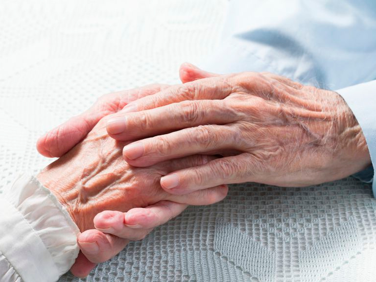

Desde fines del año pasado el mundo se enfrenta a la pandemia del Covid-19, causada por el coronavirus Sars-CoV2. A la fecha, más de dos millones de personas se han infectado y el número de muertes en el mundo es cercano a las 130.000.
En nuestro país, los primeros casos se reportaron a inicios de marzo y ya tenemos sobre los 7.000 infectados y casi 100 muertes. La tasa de crecimiento de la infección es del 18%. Y si bien está por debajo del 23-25% que muestran algunos de los países más severamente afectados por la enfermedad como España e Italia, sigue siendo una cifra preocupante.
De acuerdo a lo observado durante la evolución de esta pandemia, la población que está en mayor riesgo de morir por Covid-19 son los adultos mayores y aquellas personas que presentan enfermedades crónicas.
Es por lo tanto relevante hacernos la pregunta: ¿Qué hace a estos grupos ser los más vulnerables frente al Covid-19? La respuesta parece evidente: El aumento en la expectativa de vida en el planeta, y por extensión en nuestro país, no siempre va de la mano con un aumento en la expectativa de vida sana. Es por esto que la edad es un factor de riesgo, pero no todas las personas comparten un mismo riesgo aún teniendo la misma edad. Dicho de otra forma, no es la edad cronológica el parámetro que más información nos puede entregar para evaluar la susceptibilidad de un sujeto frente al Covid-19.
Desafortunadamente, tampoco tenemos a la fecha buenos marcadores biológicos que determinen cuán distinta es la edad cronológica de la edad biológica en los individuos. Y aunque hay prometedores avances basados en la medición de modificaciones epigenéticas para establecer fehacientemente este correlato, al día de hoy no son fácilmente aplicables a gran escala por su complejidad técnica y costos; y por lo tanto su utilización ha sido restringida solamente a laboratorios de investigación.
Uno de los factores que contribuye a que las personas mayores sean más susceptibles al Covid-19, es que durante el envejecimiento el sistema inmune pierde su capacidad de responder adecuadamente frente a estímulos nocivos como infecciones bacterianas y virales. Sin embargo, este declive funcional no es homogéneo en la población. Y así como hay quienes envejecen vigorosos y sanos, otros desarrollan múltiples patologías -la mayoría de ellas asociadas al envejecimiento- que minan su capacidad vital y los vuelven frágiles.
Desde aproximadamente una década en el sistema público de salud se realiza el Examen de Medicina Preventiva del Adulto Mayor (Empam), un examen que aborda diferentes aspectos que dan cuenta de la funcionalidad de cada persona mayor de 65 años. Este examen contiene mucha información relevante que de estar obtenida con los mismos estándares de calidad y analizada de forma pertinente permitiría cruzar esos datos con escalas internacionales de fragilidad.
La fragilidad es un síndrome que da cuenta de la pérdida de funcionalidad que afecta en la medida que se envejece. Lo contrario a la fragilidad es la resiliencia. Y la resiliencia se define como la capacidad de un organismo de resistir un estímulo nocivo para su funcionamiento. Dicho en simple, la fragilidad y la resiliencia determinan, por ejemplo, que la recuperación a una cirugía no sea exactamente igual a los 20 años que a los 70 años. Lo mismo para la recuperación de una fractura, entre otras condiciones médicas.
Hasta el día de hoy no tenemos análisis retrospectivos que informen respecto de la cobertura real en la aplicación del Empam, ni respecto de la calidad de datos colectados, ni menos un análisis que estos datos podrían entregar prospectivamente.
Los conceptos de fragilidad y resiliencia son una expresión clínica de la biología del envejecimiento, que como vimos antes no puede ser determinada con una prueba de laboratorio. Por lo tanto, en el contexto actual de la pandemia identificar aquellos adultos mayores frágiles puede contribuir significativamente a canalizar recursos en aquellas personas que tienen un mayor riesgo de desarrollar los aspectos más severos asociados al Covid-19. Por ello la Sociedad Chilena de Geriatría ha establecido un protocolo abreviado para identificar la fragilidad en las urgencias de los hospitales durante la pandemia.
En el largo plazo, un país como el nuestro que tiene recursos limitados, debiese tomar la decisión de tener mediciones permanentes de la fragilidad de nuestra población con exactamente los mismos estándares de calidad, y con un seguimiento periódico del índice de fragilidad. Adicionalmente, debemos seguir perseverando en investigar desde múltiples disciplinas como envejecen los chilenos. De esta forma con un análisis detallado, sistemático y pertinente de los datos se podrán canalizar recursos de forma más eficiente y hacer una diferencia en las condiciones de vida de una parte de la población que requiere de toda nuestra atención.
*Director Centro de Gerociencias, Salud Mental y Metabolismo (Gero)
Archivo: publicado originalmente el 5 de mayo de 2020 en el sitio anterior de la Sociedad (https://socneurociencia.cl/2020/05/05/resiliencia-versus-fragilidad-como-la-edad-es-un-factor-de-riesgo-para-el-coronavirus-pero-no-igual-para-todos/).